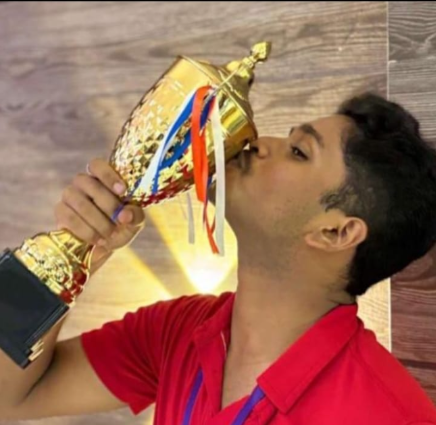
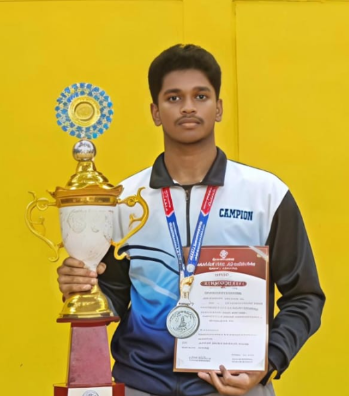
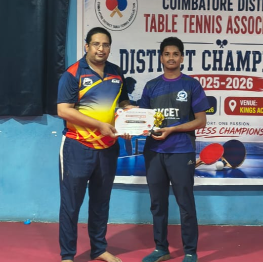

The Journey & Beginnings
I started playing table tennis at a very young age in school, and since then it has been an integral part of my life. Consistently ranked #1 in Trichy District across U-15, U-17, and U-19 categories throughout my schooling.


Major Achievements & Nationals
Won the RDS Gold Medal in 10th standard and Silver in 12th. Won major open tournaments in Madurai, Montfort Yercaud, and Vellankanni. Participating in Goa, I won Gold in the All India Youth Sports and Games. Qualified for the SGFI (School Games Federation of India) Super League finishing in top 8.
College & District Standing
Currently representing SKCET in Coimbatore, securing 3rd place in Zonals with my team and ranked among the top 6 players in the Coimbatore District Men's Category.
